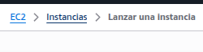

Instalaciones en EC2
Accedemos a la máquina
Verificamos en la consola de AWS que nuestra instancia está disponible.
Para ello, volvemos al servicio EC2 y accedemos al listado de instancias (la página dashboard de instancias:

En el panel de instancias podemos ver todas las instancias creadas y su estado actual.

Seleccionamos la instancia para ver su información detallada:

Desde aquí podemos consultar datos importantes como:
- Dirección IP pública
- Dirección IP privada
- Estado de la instancia
- Tipo de instancia
- Zona de disponibilidad
También podemos acceder a todos los detalles haciendo clic sobre la instancia.

Estados de una instancia
Una instancia EC2 puede estar en diferentes estados:
- pending → iniciándose
- running → en ejecución
- stopping / stopped → detenida
- shutting-down / terminated → eliminándose / eliminada
Importante:
- Una instancia stopped se puede volver a iniciar
- Una instancia terminated no se puede recuperar
Cuando eliminamos una instancia, puede seguir apareciendo durante un tiempo en el listado hasta que AWS la elimina completamente.
Conexión por ssh
Para conectar a la instancia lo vamos a hacer por SSH. Podremos conectar desde una máquina Linux o una máquina Windows.
Vamos a conectar de varias formas:
- Consola
- Desde un IDE (PhpStorm o Visual Studio Code)
- Desde un cliente FTP (FileZilla)
Necesitamos para conectar disponer de la clave privada de la pareja de claves con los permisos correctos.
Descargamos el fichero de clave privada desde la plataforma (botón AWS Details) y lo guardamos en un directorio local.


Vemos dos tipos de claves privadas, nosotros utilizaremos PEM:
-
PEM (Privacy-Enhanced Mail)
Formato estándar de clave privada usado en Linux/Mac para conectarse por SSH (ej. EC2). -
PPK (PuTTY Private Key)
Formato de clave privada específico de PuTTY (Windows), equivalente al PEM.
Descargamos el fichero y cambiamos los permisos.
- En Linux
1 chmod 400 labsuser.pem
- En Windows
Para que la clave funcione correctamente en Windows, debemos restringir los permisos del fichero:
- Clic derecho sobre el fichero
.pem - Propiedades
- Pestaña Seguridad
- Pulsar en Opciones avanzadas
- Pulsar en Deshabilitar herencia
- Elegir Quitar todos los permisos heredados
- Pulsar en Agregar
- Seleccionar tu usuario
- Dar permisos de Lectura
- Eliminar cualquier otro usuario/grupo si aparece
Establecemos la conexión
Localizamos la IP pública para poder conectar:

Tanto en Windows como en Linux vamos a conectar por SSH (en Windows también se puede usar PuTTY).
En Windows abrimos una PowerShell.
El usuario que se crea en este tipo de instancias (Ubuntu) es ubuntu, y lo especificaremos en la conexión.
Si tenemos dudas, podemos verlo en el botón Connect de la instancia.
En general, los usuarios por defecto son:
| AMI | Usuario |
|---|---|
| Ubuntu | ubuntu |
| Amazon Linux | ec2-user |
| Debian | admin |
| CentOS | centos |
| RHEL | ec2-user |
| SUSE | ec2-user |
1ssh -i labsuser.pem ubuntu@100.48.89.140Nos preguntará si queremos continuar con la conexión:

Escribimos yes y se establecerá la conexión:

Instalación de todo el sistema
Ahora vamos a proceder a la instalación de las librerías necesarias para nuestro objetivo.
Primero actualizamos los repositorios de paquetes:
sudo apt update- php y apache2
sudo apt install -y php apache2 libapache2-mod-php- Librerías necesarias para nuestro proyecto de laravel
sudo apt install -y php-mbstring php-xml php-zip php-sqlite3 php-curl php-mysql- composer
Para instalar composer tenemos diferentes opciones. En este caso vamos a descargar el instalador, ejecutarlo con PHP y copiar el ejecutable generado a una carpeta que está en el PATH del sistema con el nombre composer.
curl "https://getcomposer.org/installer" -o composer.phar
sudo php composer.phar --install-dir=/usr/local/bin --filename=composerTras la instalación podemos verificar la versión (se instalará la última disponible):
composer --version

- node y npm
En este caso procederemos de forma similar, descargando el script de configuración e instalando Node.js.
curl "https://deb.nodesource.com/setup_22.x" -o node.sh
sudo -E bash ./node.sh
sudo apt install -y nodejsIgualmente que en el caso anterior, tras la instalación deberemos verificarlo:
node -v
npm -v

Preparar el document root para copiar el proyecto de laravel
Ahora queremos copiar el proyecto de Laravel en la carpeta /var/www/html, para lo cual necesitamos permisos de escritura en esa carpeta.
Actualmente esta carpeta es propiedad de root, ya que se ha creado durante la instalación de Apache (que hemos hecho con sudo).
sudo chown -R ubuntu:www-data /var/www/htmlPodemos ver la evolución de propietarios en la siguiente imagen:

Clonamos el proyecto de laravel
cd /var/www/html
git clone https://github.com/MAlejandroR/laravel_aws.gitEsto nos descargará el proyecto en la carpeta laravel_aws, teniendo el directorio:
/var/www/html/laravel_awsEl propietario de esta carpeta y su contenido será ubuntu.

Orquestamos y creamos los assets
cd /var/www/html/laravel_aws
composer install
npm install
npm run build
Ejecutamos las migraciones junto con los seeders
php artisan migrate --seedComo el proyecto está en modo producción, nos pedirá confirmación para ejecutar migraciones y seeders.
Confirmamos:

Igualmente nos indicará que el gestor de bases de datos es sqlite3 y que no existe el fichero de base de datos. Nos pedirá confirmación para crearlo.
Aceptamos:

Creamos el link para las imágenes
php artisan storage:link
Damos permisos explícitos a las carpetas
Asignamos el proyecto a ubuntu:www-data.
El motivo de usar ubuntu como propietario es práctico: permitirá modificar fácilmente el proyecto (por ejemplo, al integrar S3 en prácticas posteriores).
sudo chown -R ubuntu:www-data /var/www/html/laravel_aws
sudo chmod 775 /var/www/html/laravel_aws/storage
sudo chmod 775 /var/www/html/laravel_aws/bootstrap/cache
sudo chmod 775 /var/www/html/laravel_aws/database/database.sqlite
Modificamos los parámetros del servidor
Debemos modificar el DocumentRoot (directorio desde el que Apache sirve los archivos).
En Laravel, este directorio debe ser /public, no la raíz del proyecto.
Editamos el fichero de configuración:
sudo nano /etc/apache2/sites-available/000-default.confModificamos:
DocumentRoot /var/www/html/laravel_aws/public

Para que Apache pueda usar .htaccess y aplicar rutas de Laravel, añadimos:
<Directory /var/www/html/laravel_aws/public>
AllowOverride All
Require all granted
</Directory>

Recuerda guardar el fichero.
Habilitamos el módulo rewrite
Ahora habilitamos el módulo necesario para Laravel y reiniciamos Apache:
Laravel utiliza URLs “amigables” (rutas) que no corresponden a archivos físicos.
El módulo rewrite permite redirigir todas las peticiones al fichero index.php, donde Laravel gestiona internamente las rutas.
sudo a2enmod rewrite
sudo systemctl restart apache2Verificar el funcionamiento
- Abrimos un navegador y comprobamos que el proyecto funciona correctamente
- Accedemos mediante la IP pública de la EC2
- Usamos protocolo http (no hay certificado SSL configurado)